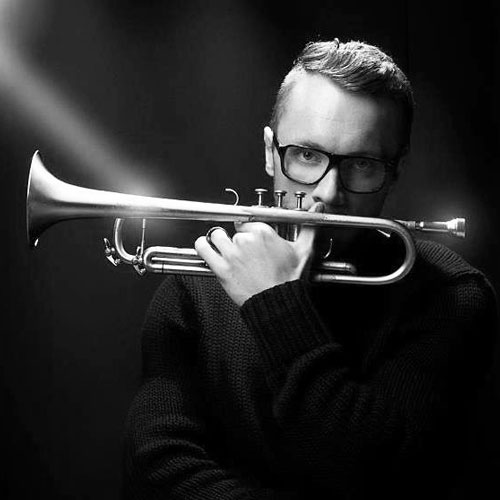

Um sjóðinn
Minningarsjóði Kristjáns Eldjárns gítarleikara er ætlað að verðlauna efnilega tónlistarmenn og afreksfólk í tónlist. Verðlaunin eru peningaverðlaun og er það ásetningur sjóðsstjórnar að upphæðin skipti styrkþegann verulegu máli og veiti honum aukið svigrúm til að helga sig spennandi verkefnum á sviði tónlistar.
Minningarsjóðurinn var stofnaður af ættingjum Kristjáns Eldjárns, vinum og samstarfsmönnum eftir að hann lést 22. apríl 2002 tæplega þrítugur að aldri. Árin 2003 og 2012 voru haldnir tónleikarnir ,,Í minningu Eldjárns’’, þar sem fjöldi manns lagði sitt af mörkum, en ágóðinn af minningartónleikunum rann óskiptur í sjóðinn.
Síðan þá hefur fjáröflun fyrst og fremst byggt á frjálsum framlögum og sölu minningarkorta, auk þess sem sjóðurinn hefur aflað fjár með því að gefa út hljómdisk og bók.
Diskurinn Ljóð, hljóð og óhljóð með tónlist Kristjáns við ljóðalestur Þórarins Eldjárns, kom út 2003 og 2006 stóð sjóðurinn að endurútgáfu á þýðingu Kristjáns Eldjárns forseta á Max og Mórits eftir Wilhelm Busch. Diskurinn Gítarmaður kom út árið 2013 og inniheldur upptökur af tvennum burtfarartónleikum Kristjáns.
16. júní 2007, þegar Kristján hefði orðið 35 ára, voru í fyrsta skipti veitt verðlaun úr minningarsjóðnum og hlaut þau Kristinn H. Árnason gítarleikari.
Oftast hefur verið veitt úr sjóðnum annað hvert ár.
Fyrri styrkhafar
Kristinn H. Árnason
Kristinn H. Árnason hóf gítarnám hjá Gunnari H. Jónssyni í Tónskóla Sigursveins D. Kristinssonar og lauk burtfararprófi árið 1983. Hann stundaði framhaldsnám við Manhattan School of Music og lauk þaðan prófi árið 1987. Einnig lærði hann í Englandi hjá Gordon Crosskey og á Spáni hjá José Tomas. Á námsárum sínum lék Kristinn m.a. fyrir Hans Werner Henze, Manuel Barrueco og Andrés Segovia.
Kristinn hefur haldið fjölda tónleika á Íslandi og einnig leikið á tónleikum vestan hafs og austan, meðal annars í Wigmore Hall í London og kammersal Concertgebouw í Amsterdam, á Norðurlöndum, Ítalíu og í Bandaríkjunum. Hann hefur hljóðritað fyrir hljóðvarp og sjónvarp og þegið starfslaun listamanna frá íslenska ríkinu. Kristinn hefur leikið inn á fjölda geisladiska og hlaut diskur hans með verkum eftir Sor og Ponce Íslensku tónlistarverðlaunin árið 1997. Nýjasti geisladiskur hans kom út árið 2013 og ber nafnið Transfiguratio. Árið 2007 hlaut hann verðlaun úr Minningarsjóði Kristjáns Eldjárns.
Daníel Bjarnason
Daníel Bjarnason stundaði nám í píanóleik, hljómsveitarstjórn og tónsmíðum í Reykjavík áður en hann fór til framhaldsnáms í hljómsveitarstjórn í Freiburg í Þýskalandi.
Daníel hefur unnið með fjölda hljómsveita og má þar m.a. nefna Los Angeles Philharmonic, Ulster Orchestra, Winnipeg Symphony Orchestra, Britten Sinfonia, Adelaide Symphony Orchestra, Nieuw Ensemble Amsterdam og Sinfonietta Cracovia auk Sinfóníu-hljómsveitar Íslands og Hljómsveitar Íslensku óperunnar. Einnig hefur hann starfað með fjölmörgum höfundum og flytjendum svo sem Sigurrós, Efterklang, Ólöfu Arnalds og Hjaltalín.
Daníel hefur gefið út tvær plötur hjá plötufyrirtækinu Bedroom Community, Processions (2010) ogSolaris (2012). Sú síðarnefnda var unnin í samstarfi við raftónskáldið Ben Frost. Þriðja plata Daníels, Over Light Earth, kemur út í haust en á henni verður að finna nýleg hljómsveitarverk.
Daníel hefur hlotið fjölda viðurkenninga og nýlega hlaut hann Íslensku tónlistarverðlaunin sem tónskáld ársins auk þess að hljóta Edduverðlaunin fyrir tónlistina við kvikmynd Baltasars Kormáks,Djúpið, sem hann gerði ásamt Ben Frost. Daníel hlaut verðlaun úr minningarsjóði Kristjáns Eldjárns árið 2009.
Helga Kristbjörg Guðmundsdóttir
Helga Kristbjörg Guðmundsdóttir harmóníkuleikari stundaði nám við Tónlistarskóla Ísafjarðar. Þar naut hún leiðsagnar Messíönu Marzellíusdóttur, Vadim Fedorov og Hrólfs Vagnssonar. Haustið 2004 stundaði Helga nám í tónlistarskólanum la CNIMA í Frakklandi. Vorið 2010 lauk Helga B.Mus. prófi frá Listaháskóla Íslands þar sem aðal kennarar hennar voru Tatu Kantomaa og Vadim Fedorov.
Eftir útskrift hlaut Helga styrk úr Styrktarsjóði Halldórs Hansen og ári síðar verðlaun úr Minningarsjóði Kristjáns Eldjárns gítarleikara. Helga hefur leikið með Íslensku Óperunni, Sinfóníuhljómsveit Íslands, CAPUT, Fimm í tangó og í uppfærslum hjá Þjóðleikhúsinu, og starfaði auk þess sem harmonikukennari á höfuðborgarsvæðinu um nokkurra ára skeið.
Síðastliðinn vetur hefur Helga stundað einkanám í klassískum harmonikuleik hjá prófessor Geir Draugsvoll sem kennir við Konunglega Danska Tónlistarháskólann (DKDM) en Helga hlaut nýlega inngöngu í mastersnám þar og mun því hefja formlegt nám við skólann næsta haust.
Ari Bragi Kárason
Ari Bragi Kárason er uppalinn á Seltjarnarnesi þar sem hann hóf nám við Tónlistarskóla Seltjarnarness ungur að aldri og byrjaði að læra á klarínettu undir handleiðslu Önnu Benassi og seinna Lárusar H. Grímssonar. Hann hóf nám á trompet 9 ára gamall undir handleiðslu föður síns og svo seinna hjá Kjartani Hákonarsyni. Hann lauk miðstigi í klassískum trompetleik frá Tónlistarskóla Seltjarnarness og færði sig þá um set í Tónlistarskóla F.Í.H. Kennarar hans þar voru Eiríkur Örn Pálsson og Ásgeir H. Steingrímsson. Hann stundaði einnig einkatíma hjá Sigurði Flosasyni. Í september 2008 hóf Ari Bragi nám við New School for Jazz and Contemporary Music í New York.
Ari Bragi var á meðal 16 sem hlutu afreksverðlaun á 3000 manna námskeiði sumarið 2006 við hinn virta Interlochen-skóla í Michigan í Bandaríkjunum. Árið 2008 var hann fyrstur til að fá styrk úr Minningarsjóði Árna Scheving. Árið 2011 hlaut hann verðlaun í flokknum Bjartasta vonin á íslensku tónlistarverðlaununum. Árið 2012 hlaut hann styrk úr minningarsjóði Kristjáns Eldjárns.
Ari Bragi lék nýlega inná nýjustu hljómplötu saxófónleikarans Jóels Pálssonar með Eyþóri Gunnarssyni, Einari Scheving og Davíð Þór Jónssyni. Hann hefur einnig leikið í hljóðritunum með m.a. Noruh Jones, Jeff Tain Watts, Grizzly Bear, Sigur Rós, Hjaltalín og Stórsveit Reykjavíkur.